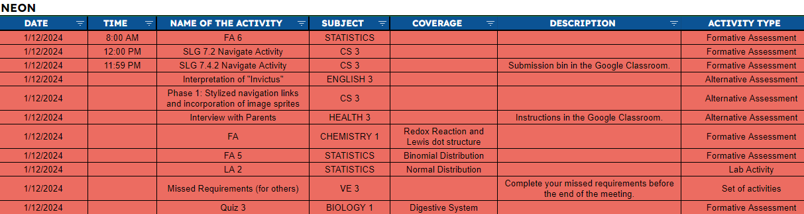

"WHY IS THIS BIO LG 72 PAGES"
There are 3 things certain in the new year as a Pisaynon, Intrams, Reqs, and THE QUARTER EXAM.
Starting the next few weeks, the campus will be full of fear and sadness as multiple assignments get cramped into a single day and as the Quarter Exam approaches it. Fellow Grade 9 student Vicente Antonio Ong expresses his frustration as he approaches a day where there are 12 requirements due and where the quarter exams are in the school day after that.
"It hurts my brain even thinking about that day, like theres 11 requirements, 2 days, AND A DOUBLE PERIOD STATISTICS CLASS. There couldn't be a day worse than that. Right?"
However fret not, as Intrams will be directly after this hell week, and will surely be a very fun event for everyone involved. As a wise man once said, there will always be light at the end of a tunnel.